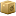
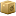
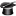

 -
 -


Report Modules
This section mostly aggregates information and provides extensive views of the collected information.
There are several reports tied to their respective database tables (i.e. devices, modules or nodes) and a "Combination Report", which focusses on a task (like asset management), which depends on several tables.
- Set a filter, if desired (is taken into account for links to other modules).
- Select reports you wish to look at (hold down CTRL for multiple).
- You can use the templates as quick filter shortcuts (icons left of report selectbox)
- The last map can be included via
 and a limit can be chosen as well (default is 10)
and a limit can be chosen as well (default is 10)
- Reports can be "optimized" via  (table captions reveal, what's been optimized)
- "Alternative sort" via uses keys rather than values (table captions reveal, what's sorted on)
 NeDi Help
NeDi Help